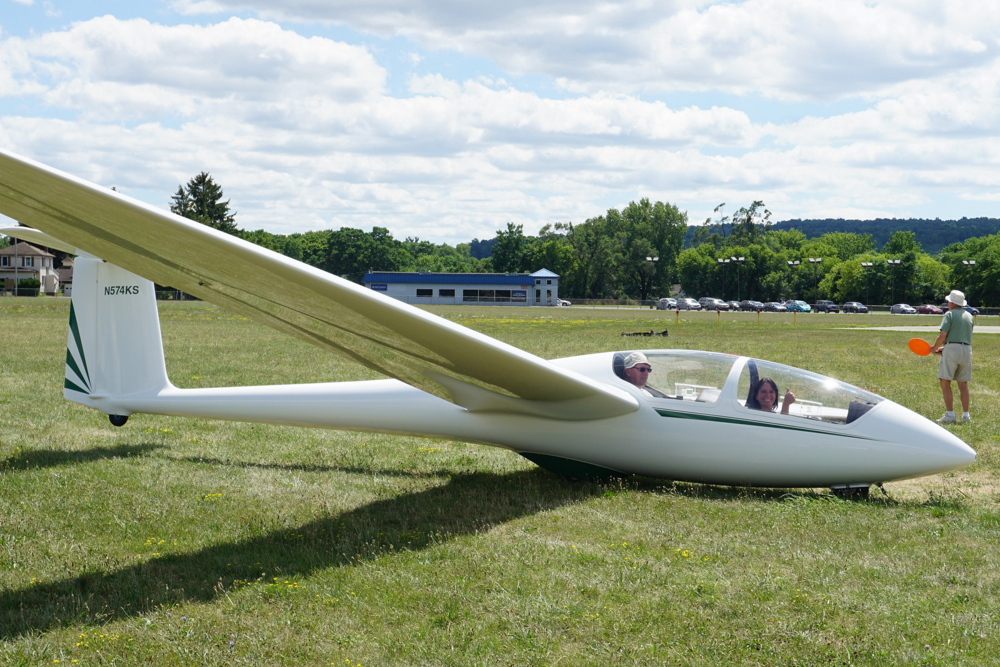
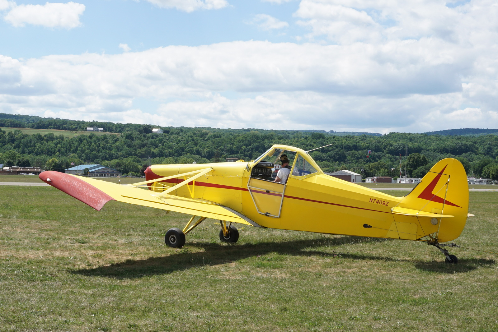
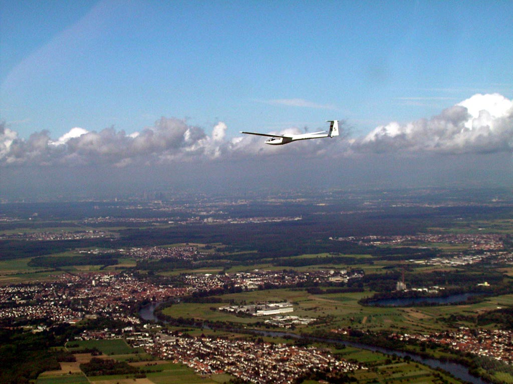

Learn
Knowledge moves person to person.
Instructors, mentors, tow pilots, and experienced ground crew turn operating days into a living classroom.
Member-powered since 1949
A soaring club is an aircraft fleet, a school, a workshop, and a community—all at once.
The club model
FLSC brings people together to own, maintain, launch, and fly sailplanes. Volunteer instruction and member labor make a kind of aviation possible that would otherwise be out of reach for many pilots.
Historical dates and narratives should be expanded from verified club records. The public archive establishes a long-running Dansville soaring community; the wiki preserves a place for the fuller story.

Learn
Instructors, mentors, tow pilots, and experienced ground crew turn operating days into a living classroom.

Serve
Scheduling, inspections, towing, wing running, recording, maintenance, and field care are all part of the flight.

Grow
Students become pilots; pilots become mentors; local flights grow into badges, distance, and lifelong mastery.
Write the next chapter
Bring curiosity, reliability, and a willingness to help the whole operation—not only your own flight.